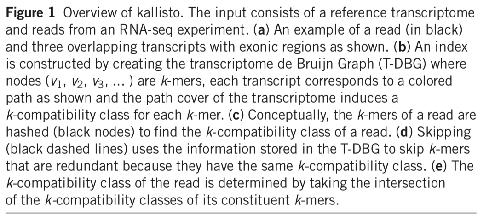
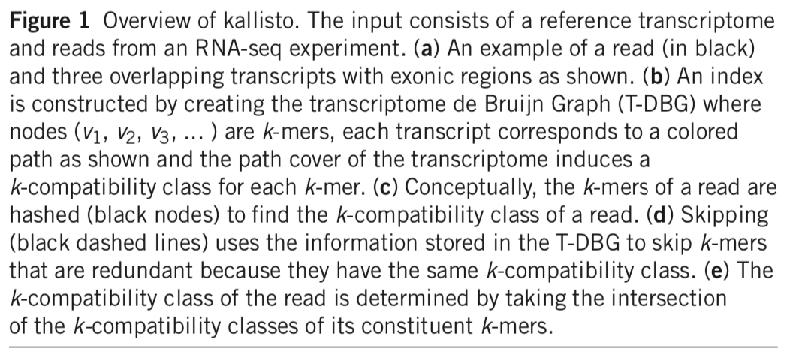

Sequencing technology
- Measuring mRNA molecules typically happens through sequencing.
- The technology continues to evolve at an incredible speed. The data output of so-called `next generation’ sequencing machines has more than doubled each year! Simultaneously, the cost of sequencing (in terms of $ per Gigabase) is dropping. Each year, we’re able to sequence more for less money, providing more information, as well as also computational and statistical challenges.
- This tremendous technological revolution has revolutionized biology, and genomic sequencing is now a core component of the modern-day biologist’s toolkit.
- The large majority of sequencing data is generated using sequencing-by-synthesis using machines produced by the company Illumina. While new players such as Pacific Biosciences and Oxford Nanopore have entered the scene, these are typically most useful for (but not limited to) DNA sequencing rather than gene expression studies, owing to their capability of sequencing long molecules.
The sequencing workflow
Library preparation steps:
- First, the biological samples of interest are collected. Owing to the maturity of different protocols for sequencing, several types of biological input samples are amenable to sequencing, such as frozen tissues or FFPE-preserved samples.
- The (m)RNA molecules from our sample are captured. This typically involves cell lysis in order to release the (m)RNA molecules from within the cells. The mRNA molecules are most often captured using (i) polyA-capture to select for polyadenylated RNA, or (ii) ribosomal depletion, where ribosomal and transfer RNAs are depleted, and so also non-polyA-mRNA molecules may be captured, such as micro RNAs. In the case of `targeted sequencing’, where relevant molecules are of main interest (e.g., a gene panel), these targets can be specifically targeted in this step.
- Fragmentation of captured molecules. The captured molecules are fragmented, either chemically or mechanically. The appropriate size of fragments depends on the sequencing machines, but is often in the range of 300 - 500bp.
- Reverse transcription. Current dominant sequencing machines only sequence double-stranded DNA molecules. Therefore, in order to measure single-stranded mRNA, we must first reverse transcribe these molecules to a double-stranded complementary (cDNA) molecule.
- Adapter ligation. Adapters are oligonucleotides (short sequences of nucleotides) that are platform-specific sequences for fragment recognition by the sequencing machines. These are added either to the 3’ or 5’ end of the cDNA molecules or used as primers in the reverse transcription reaction. The final cDNA library consists of cDNA inserts flanked by an adapter sequence on each end.
- PCR amplification. To increase concentration, several PCR reaction cycles are performed.
- Loading the amplified cDNA library on the sequencing machine. Find out how sequencing-by-synthesis works through this video. Note that the video shows paired-end sequencing, where a number of basepairs are sequenced at each end of the fragment. All previous steps together are described as `sample prep’ in that video.
The sequencing output files
- The typical output of a sequencing machine we will be working with are FASTA or FASTQ files for each sample. Each of these files are several gigbases large and contain millions of sequences, which we will call reads. For paired-end sequencing, there are two files for each sample, one for each end of the sequenced fragments.
- The difference between a FASTA file and a FASTQ file, is that while FASTA files only store the results of base calls (sequences), FASTQ files also store the quality score of each base call (i.e., each called nucleotide), which can be useful in downstream analyses such as mapping or variant calling.
- A FASTQ file contains four lines for each sequenced read:
- Sequence identifier line, starting with @.
- The sequence.
- Another sequence identifier line, now starting with +.
- Quality scores.
As you’ll have noticed, the base call quality scores are encoded as ASCII characters for efficient storage. These ASCII characters can be converted into integers called Phred scores, which are logarithmically related to the probability of an erroneous base call.
Preprocessing of raw sequencing data
After sequencing, we typically do a quality control (QC) check to verify the quality of the samples. During QC check, aberrant samples due to e.g. degraded mRNA can be detected.
The sequencing reads on their own contain a lot of information, but are most useful if we would be able to assign sequencing reads to genomic features (genes, exons, transcripts, etc.), i.e., for each sequencing read we will try to derive the (set of) feature(s) that could have plausibly produced the fragment through the process of gene expression. This process is called mapping. Most often we map reads to genes.
Quality control
During quality control, diagnostic plots are created for each sample in order to determine its quality. The most popular QC tool for bulk RNA-seq data is FastQC. If many samples are sequenced, then MultiQC can be used to aggregate the QC checks across samples in a conveniently organized overview.
The FastQC website provides interesting example reports for us to look at and compare against. Here are example reports of high-quality Illumina data and low-quality Illumina data.
Mapping
- Mapping is a critical step in the interpretation of RNA-seq data, where we are attributing reads to genomic features.
- Allows us to measure how strong a feature such as a gene is expressed: the number of reads mapping to a gene serve as a proxy for how high that gene has been expressed in the sample.
- While this opens the door to many opportunities, mapping is hard.
- We are typically unable to assign each individual read uniquely to one specific gene; some reads cannot be unambiguously mapped and are compatible with multiple genes. These reads are said to be ‘multi-mapping’.
Finally, a note on terminology. In this text we will use the words ‘read’ or ‘fragment’ (referring to the fragmented mRNA molecule being sequenced) to designate a datum, note that this could be either a single read (in single-end sequencing) or a read pair (in paired-end sequencing). The literature may also use these words interchangeably, although ‘fragment’ seems better at avoiding ambiguity between single-end reads and paired-end read pairs.
Reference files
- The alignment most often relies on a reference genome of the species, which can be considered a ‘representative example’ of the genome sequence of that species. Reference genomes are contiuously updated and released periodically.
- Reference genomes can be freely downloaded from several providers, for example Ensembl or Gencode.
- Along with a reference genome, an annotation GFF or GTF file defines the coordinates of specific genomic features.
- While here we will focus on reference-based alignment, i.e., alignment where a reference genome or transcriptome is available, note that a de novo construction of a reference transcriptome is also possible, where the reference may be constructed from the observed sequencing reads.
- More recently, mapping of RNA-seq data occurs more often against a reference transcriptome, which is a reference file containing the sequences all known isoforms of a particular species, e.g., using kallisto or Salmon.
- The set of spliced transcripts is much smaller than the entire genome, and therefore mapping against a reference transcriptome is typically fast and memory efficient.
- However, it has been noted that mapping against a reference transcriptome may also introduce spurious expression for genes that are not expressed. These observations can be explained by intronic reads that share some sequence similarity with transcripts, and could map to spliced transcript sequences. Recent methods, such as alevin-fry, avoid this by expanding the reference transcriptome to also include intronic sequences.
Alignment-based workflows
- Traditionally, alignment-based workflows have been used to map reads, where one tries to find the exact coordinates a read maps to on the reference genome or the reference transcriptome.
- Note that due to alternative splicing, reads do not necessarily map contiguously on a reference genome, as a read can overlap with a splicing junction, where an intron has been excised. When mapping against a transcriptome, however, reads should be mapping contiguously.
- A main challenge in spliced alignment against a reference genome is the proper alignment of reads that span a splice junction, especially when these junctions are not annotated a priori. Indeed, in spliced alignment reads can be split at any nucleotide, and the corresponding subsequences can map several thousands of basepairs apart. Meanwhile, the main challenge in unspliced alignment to a transcriptome is the redundant sequence among related transcripts in the transcriptome, which often leads to a high multi-mapping rate (i.e., reads that cannot be unambiguously assigned to a single transcript).
- Spliced alignment against a genome is therefore computationally a much harder task. Since the transcript sequences are already spliced when aligning to a reference transcriptome, reads should align contiguously, and many of the computationally expensive steps and heuristics can be avoided, there.
Alignment-free workflows
- Modern approaches avoid mapping each fragment individually (i.e., do not attempt to find the exact coordinates of a read’s origin), and instead posit a probabilistic model where transcript abundances are typically defined using its constituent \(k\)-mers. These methods are sometimes referred to as lightweight.
- A \(k\)-mer is a short sequence of nucleotides of length \(k\). The space of possible \(k\)-mers and the corresponding transcripts can be precomputed in advance using the reference transcriptome, providing a computational advantage as it only needs to be computed once.
- For each fragment, the transcripts its \(k\)-mers are compatible with is searched for using an indexed (efficiently searchable) transcriptome. The set of compatible transcripts is called the ‘\(k\)-compatibility class’, ‘equivalence class’ or ‘transcript compatibility class’ of the fragment.
 

Abundance quantification
Given a set of mappings, using either alignment-based or alignment-free workflows, the estimation of expression of a gene/transcript/exon may occur in several ways.
Counting:
- In alignment-based workflows, one could do a direct counting of fragments at, for instance, the gene level, counting the number fragments mapping to each gene. This has been the dominant approach for the first decade of RNA-seq data, often obtained using reference genome alignments.
- Many heuristic choices need to be made: Do we count a fragment as soon as it intersects with the gene’s coordinates, or do we require the full fragment to map to the gene? Do we count intronic reads? Do we count multi-mapping reads?
Estimation:
- Abundance quantification is more recently starting to shift from counting towards using statistical models to estimate the expression counts for a feature, which in this case is typically a transcript.
- This approach is amenable to alignment-free workflows, since the number of fragments in each equivalence class are sufficient statistics for the abundance quantification, meaning that they contain all information needed to estimate the parameters of the statistical model, and hence the feature-level abundances. Since the expression counts in this case are estimated, they are not necessarily integer counts, and will be referred to as ‘estimated counts’.
- In order to derive these, the EM-algorithm (Dempster et al. (1977)) is often used, although other approaches have been used by tools like Salmon. A big advantage of the estimation approach is that it probabilistically assigns fragments to transcripts, thereby automatically dealing with multi-mapping reads. The total number of fragments mapping to each transcript is then the sum of all fragment-level probabilities to be assigned to that respective transcript.
The final countdown
Once abundances have been quantified, the (estimated) counts are typically stored in a count matrix, with genes spanning the rows and samples spanning the columns. This count matrix forms the basis of most downstream analyses to interpret RNA-seq data, and it will be the main object we will be working with in the following lectures.
